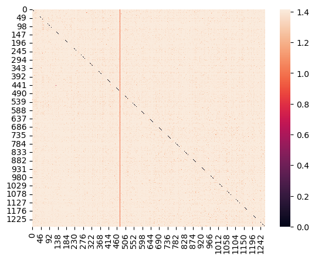

GridSearchCV(estimator=MultinomialNB(),
param_grid={'alpha': array([0.01, 0.12, 0.23, 0.34, 0.45, 0.56, 0.67, 0.78, 0.89, 1. ])})</pre><b>In a Jupyter environment, please rerun this cell to show the HTML representation or trust the notebook. <br />On GitHub, the HTML representation is unable to render, please try loading this page with nbviewer.org.</b></div><div class="sk-container" hidden><div class="sk-item sk-dashed-wrapped"><div class="sk-label-container"><div class="sk-label fitted sk-toggleable"><input class="sk-toggleable__control sk-hidden--visually" id="sk-estimator-id-2" type="checkbox" ><label for="sk-estimator-id-2" class="sk-toggleable__label fitted sk-toggleable__label-arrow fitted"> GridSearchCV<a class="sk-estimator-doc-link fitted" rel="noreferrer" target="_blank" href="https://scikit-learn.org/1.4/modules/generated/sklearn.model_selection.GridSearchCV.html">?<span>Documentation for GridSearchCV</span></a><span class="sk-estimator-doc-link fitted">i<span>Fitted</span></span></label><div class="sk-toggleable__content fitted"><pre>GridSearchCV(estimator=MultinomialNB(),
param_grid={'alpha': array([0.01, 0.12, 0.23, 0.34, 0.45, 0.56, 0.67, 0.78, 0.89, 1. ])})</pre></div> </div></div><div class="sk-parallel"><div class="sk-parallel-item"><div class="sk-item"><div class="sk-label-container"><div class="sk-label fitted sk-toggleable"><input class="sk-toggleable__control sk-hidden--visually" id="sk-estimator-id-3" type="checkbox" ><label for="sk-estimator-id-3" class="sk-toggleable__label fitted sk-toggleable__label-arrow fitted">estimator: MultinomialNB</label><div class="sk-toggleable__content fitted"><pre>MultinomialNB()</pre></div> </div></div><div class="sk-serial"><div class="sk-item"><div class="sk-estimator fitted sk-toggleable"><input class="sk-toggleable__control sk-hidden--visually" id="sk-estimator-id-4" type="checkbox" ><label for="sk-estimator-id-4" class="sk-toggleable__label fitted sk-toggleable__label-arrow fitted"> MultinomialNB<a class="sk-estimator-doc-link fitted" rel="noreferrer" target="_blank" href="https://scikit-learn.org/1.4/modules/generated/sklearn.naive_bayes.MultinomialNB.html">?<span>Documentation for MultinomialNB</span></a></label><div class="sk-toggleable__content fitted"><pre>MultinomialNB()</pre></div> </div></div></div></div></div></div></div></div></div>
clf_titles_op.best_params_
Training Scores:
clf_titles_op.score(X_train_titles_vec, y_train_titles)
cross_val_score(clf_titles_op, X_train_titles_vec, y_train_titles)
array([0.80769231, 0.81065089, 0.79980276, 0.8213228 , 0.80454097])
np.mean(cross_val_score(clf_titles_op, X_train_titles_vec, y_train_titles))
Testing Score:
clf_titles_op.score(X_test_titles_vec, y_test_titles)
cross_val_score(clf_titles_op, X_test_titles_vec, y_test_titles)
array([0.7992126 , 0.7480315 , 0.7826087 , 0.75494071, 0.78656126])
np.mean(cross_val_score(clf_titles_op, X_test_titles_vec, y_test_titles))
TF-IDF for Titles
titles_tfidf = text.TfidfTransformer()
X_train_titles_tfidf = titles_tfidf.fit_transform(X_train_titles_vec)
X_test_titles_tfidf = titles_tfidf.transform(X_test_titles_vec)
clf_tfidf_titles = MultinomialNB(alpha=0.67)
Use Prevoius Optimization
clf_tfidf_titles.fit(X_train_titles_tfidf, y_train_titles)
MultinomialNB(alpha=0.67)
In a Jupyter environment, please rerun this cell to show the HTML representation or trust the notebook.
On GitHub, the HTML representation is unable to render, please try loading this page with nbviewer.org.Training Score:
clf_tfidf_titles.score(X_train_titles_tfidf, y_train_titles)
cross_val_score(clf_tfidf_titles, X_train_titles_tfidf, y_train_titles)
array([0.80571992, 0.80276134, 0.79191321, 0.82230997, 0.80256663])
np.mean(cross_val_score(clf_tfidf_titles, X_train_titles_tfidf, y_train_titles))
Testing Score
clf_tfidf_titles.score(X_test_titles_tfidf, y_test_titles)
cross_val_score(clf_tfidf_titles, X_test_titles_tfidf, y_test_titles)
array([0.78346457, 0.7519685 , 0.76284585, 0.7826087 , 0.75889328])
np.mean(cross_val_score(clf_tfidf_titles, X_test_titles_tfidf, y_test_titles))
fake_i = np.where(y_test_titles == 'FAKE')[0]
true_i = np.where(y_test_titles == 'REAL')[0]
subset_rows = np.concatenate([fake_i,true_i])
subset_rows
array([ 0, 2, 4, ..., 1263, 1264, 1265], dtype=int64)
sns.heatmap(euclidean_distances(X_test_titles_tfidf[subset_rows]))

Results for text
We see much higher scores than titles with about a 10% increase in testing and trainig crossVal scores. Something interesting is optimizing MultinomialNB() did actually show better results with a lower Alpha. The training data for both countVec and TFIDF are again almost Identical, this is again mostlikely due to overfitting.
news_text_df = news_df.drop(columns=['title'])
text_X = news_text_df['text']
text_y = news_text_df['label']
# Get splits for text
X_train_text, X_test_text, y_train_text, y_test_text = train_test_split(text_X, text_y)
Instantiate and fit classifier
text_counts = CountVectorizer()
X_train_text_vec = text_counts.fit_transform(X_train_text) #Build Vocab
X_test_text_vec = text_counts.transform(X_test_text)
clf_text = MultinomialNB()
clf_text.fit(X_train_text_vec, y_train_text)
MultinomialNB()
In a Jupyter environment, please rerun this cell to show the HTML representation or trust the notebook.
On GitHub, the HTML representation is unable to render, please try loading this page with nbviewer.org.clf_text.score(X_train_text_vec, y_train_text)
clf_text.score(X_test_text_vec, y_test_text)
Optimize:
clf_text_2 = MultinomialNB()
params_text = {'alpha': np.linspace(0.01, 1, 10)}
clf_text_op = GridSearchCV(clf_text_2, params_text)
clf_text_op.fit(X_train_text_vec, y_train_text)
GridSearchCV(estimator=MultinomialNB(),
param_grid={'alpha': array([0.01, 0.12, 0.23, 0.34, 0.45, 0.56, 0.67, 0.78, 0.89, 1. ])})</pre><b>In a Jupyter environment, please rerun this cell to show the HTML representation or trust the notebook. <br />On GitHub, the HTML representation is unable to render, please try loading this page with nbviewer.org.</b></div><div class="sk-container" hidden><div class="sk-item sk-dashed-wrapped"><div class="sk-label-container"><div class="sk-label fitted sk-toggleable"><input class="sk-toggleable__control sk-hidden--visually" id="sk-estimator-id-7" type="checkbox" ><label for="sk-estimator-id-7" class="sk-toggleable__label fitted sk-toggleable__label-arrow fitted"> GridSearchCV<a class="sk-estimator-doc-link fitted" rel="noreferrer" target="_blank" href="https://scikit-learn.org/1.4/modules/generated/sklearn.model_selection.GridSearchCV.html">?<span>Documentation for GridSearchCV</span></a><span class="sk-estimator-doc-link fitted">i<span>Fitted</span></span></label><div class="sk-toggleable__content fitted"><pre>GridSearchCV(estimator=MultinomialNB(),
param_grid={'alpha': array([0.01, 0.12, 0.23, 0.34, 0.45, 0.56, 0.67, 0.78, 0.89, 1. ])})</pre></div> </div></div><div class="sk-parallel"><div class="sk-parallel-item"><div class="sk-item"><div class="sk-label-container"><div class="sk-label fitted sk-toggleable"><input class="sk-toggleable__control sk-hidden--visually" id="sk-estimator-id-8" type="checkbox" ><label for="sk-estimator-id-8" class="sk-toggleable__label fitted sk-toggleable__label-arrow fitted">estimator: MultinomialNB</label><div class="sk-toggleable__content fitted"><pre>MultinomialNB()</pre></div> </div></div><div class="sk-serial"><div class="sk-item"><div class="sk-estimator fitted sk-toggleable"><input class="sk-toggleable__control sk-hidden--visually" id="sk-estimator-id-9" type="checkbox" ><label for="sk-estimator-id-9" class="sk-toggleable__label fitted sk-toggleable__label-arrow fitted"> MultinomialNB<a class="sk-estimator-doc-link fitted" rel="noreferrer" target="_blank" href="https://scikit-learn.org/1.4/modules/generated/sklearn.naive_bayes.MultinomialNB.html">?<span>Documentation for MultinomialNB</span></a></label><div class="sk-toggleable__content fitted"><pre>MultinomialNB()</pre></div> </div></div></div></div></div></div></div></div></div>
Train scores:
clf_text_op.score(X_train_text_vec, y_train_text)
cross_val_score(clf_text_op, X_train_text_vec, y_train_text)
array([0.88643533, 0.90631579, 0.90105263, 0.89894737, 0.89894737])
np.mean(cross_val_score(clf_text_op, X_train_text_vec, y_train_text))
Test Scores:
clf_text_op.score(X_test_text_vec, y_test_text)
cross_val_score(clf_text_op, X_test_text_vec, y_test_text)
array([0.86750789, 0.84542587, 0.86119874, 0.87066246, 0.88924051])
np.mean(cross_val_score(clf_text_op, X_test_text_vec, y_test_text))
TF-IDF for Body Text
text_tfidf = text.TfidfTransformer()
X_train_text_tfidf = text_tfidf.fit_transform(X_train_text_vec)
X_test_text_tfidf = text_tfidf.transform(X_test_text_vec)
clf_tfidf_text = MultinomialNB(alpha=0.1) #Used previous optimization
clf_tfidf_text.fit(X_train_text_tfidf, y_train_text)
MultinomialNB(alpha=0.1)
In a Jupyter environment, please rerun this cell to show the HTML representation or trust the notebook.
On GitHub, the HTML representation is unable to render, please try loading this page with nbviewer.org.Training scores
clf_tfidf_text.score(X_train_text_tfidf, y_train_text)
cross_val_score(clf_tfidf_text, X_train_text_tfidf, y_train_text)
array([0.89064143, 0.91473684, 0.89789474, 0.88842105, 0.89473684])
np.mean(cross_val_score(clf_tfidf_text, X_train_text_tfidf, y_train_text))
Test Scores:
clf_tfidf_text.score(X_test_text_tfidf, y_test_text)
cross_val_score(clf_tfidf_text, X_test_text_tfidf, y_test_text)
array([0.85488959, 0.86435331, 0.88012618, 0.83280757, 0.87025316])
np.mean(cross_val_score(clf_tfidf_text, X_test_text_tfidf, y_test_text))
fake_i_text = np.where(y_test_text == 'FAKE')[0]
true_i_text = np.where(y_test_text == 'REAL')[0]
subset_rows = np.concatenate([fake_i_text, true_i_text])
sns.heatmap(euclidean_distances(X_test_text_tfidf[subset_rows]))
Summary
Using the whole body text of articles is more telling of weather its fake or not. Its clear that feeding the models with more data showed better results, body text having a higher word count allowed for more comparison and complex matrices. The trends in this data show MultinomialNB will start to plateau with these kinds of predictions. Titles can have maybe 10 unique words at most where the articles have much much more, a quick google search shows on average a single paragraph has about 200 words. This shows that feeding MultinomialNB even more articles/titles will have diminishing returns, this points to the need of a more complex model.